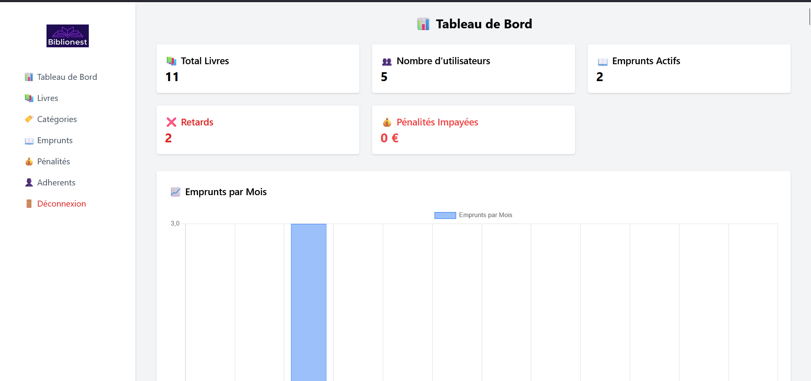

Mes projets
Mes projets

Gestion bibliothèque
Ce projet est une application web de gestion de bibliothèque développée avec Laravel. Elle permet de gérer les livres, les utilisateurs et les emprunts, avec un système d’authentification pour sécuriser l’accès. L’objectif est de simplifier le suivi des prêts et la gestion du stock de livres via une interface claire et facile à utiliser.

Todo-List
Ce projet est une application de bureau développée en Java avec JavaFX. Elle permet d’ajouter, modifier, supprimer et rechercher des tâches. Les tâches sont affichées dans un tableau interactif avec un filtre en temps réel. Un bouton permet d’exporter la liste dans un fichier texte via un sélecteur.